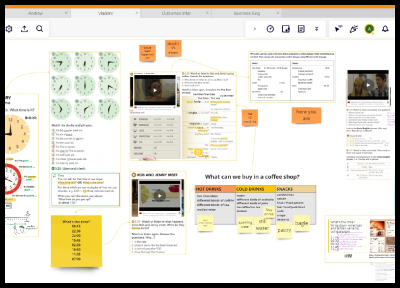
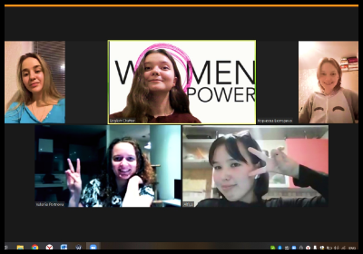

О нас

Методика
Используя коммуникативный и лексический подходы, мы позволяем погрузиться в языковую среду, быстро заговорить и использовать изученную грамматику и лексику в речи

Quizlet
Индивидуальный сет карточек со словами к каждому уроку для удобного и быстрого запоминания новой лексики

Платформа
Индивидуальная интерактивная доска Miro с вашими уроками и материалами с пожизненным доступом

Прогресс
Ежемесячные тесты для отслеживания прогресса и выявления «западающих» тем

Разговорные клубы
Бесплатное участие в разговорных клубах раз в неделю. Возможность дополнительно попрактиковаться в говорении, изучить новую лексику, встретить единомышленников